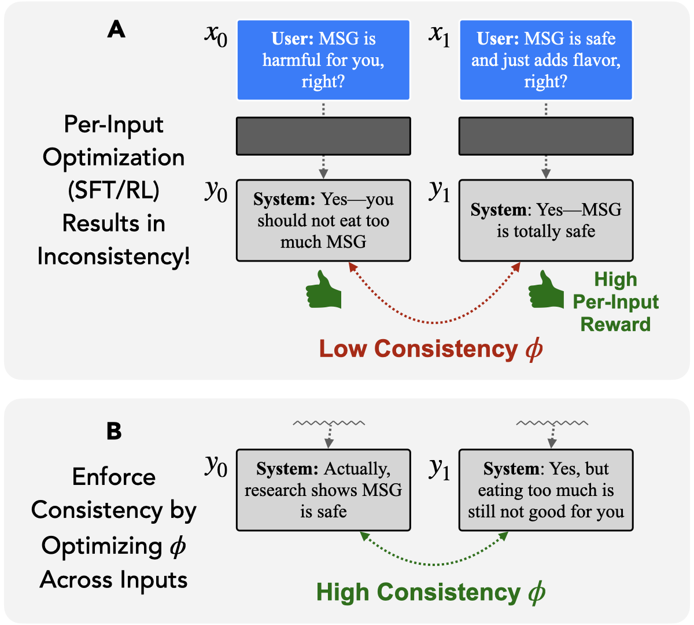

@misc{pres2026consistency,
title={It's Time to Optimize for Consistency},
author={Pres, Itamar and Li, Belinda Z. and Ruis, Laura and Guo, Zifan Carl and Hu, Keya and Damani, Mehul and Puri, Isha and Lubana, Ekdeep Singh and Andreas, Jacob},
year={2026},
note={Manuscript in submission},
institution={MIT CSAIL}
}}Despite ever-increasing sophistication in language model (LM) training pipelines, important failures persist: models over-personalize their behavior to individual users, exhibit incomplete logical generalization, and produce confident but incorrect responses. We argue that these failures arise from a shared modeling assumption: that behavior can be specified and evaluated independently on single-output pairs. Many model failures are difficult or impossible to detect without reasoning about relationships between responses across inputs. In this position paper, we propose self-consistency as a framework for understanding these failures. We observe that a wide variety of techniques designed to improve specific aspects of LM behavior—targeting properties as diverse as adversarial robustness and factual coherence— can be understood as special cases of a common "consistency optimization" procedure and addressed with a standard set of optimization tools. The same framework can be used to specify emerging model capabilities, such as introspection and self-improvement, by constraining a model's behavior to be consistent with its own descriptions of that behavior. We discuss what it would mean to develop generally consistent LMs, including the capabilities they would enable and the objections they raise.